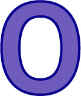

나의 궁합 코드 : 0000
나랑 잘 맞는 코드 : 1011, 1001 / 안 맞는 코드 : 1110
- 연애할 때 애정표현이나 오글거리는 표현에 약하며 직설적인 화법 때문에 상대와 갈등이 생기기는 쉽지만 사소한 것으로는 잘 싸우지 않는 편입니다. 상대에게 의지하려 하지 않는 성향이 강하며 딱히 헌신하지도 않습니다. 하지만 바람기는 0에 가까우며 가식이 없고 항상 쿨한 매력을 보여주는 유형입니다.
- 지적이면서도 자신감 있는 사람과 궁합이 잘 맞으며 자유분방한 영혼과는 상극입니다. 밀당이라곤 하나도 모르는 솔직 담백한 성격 때문에 지나치게 감성적인 사람과는 잘 맞지 않습니다.